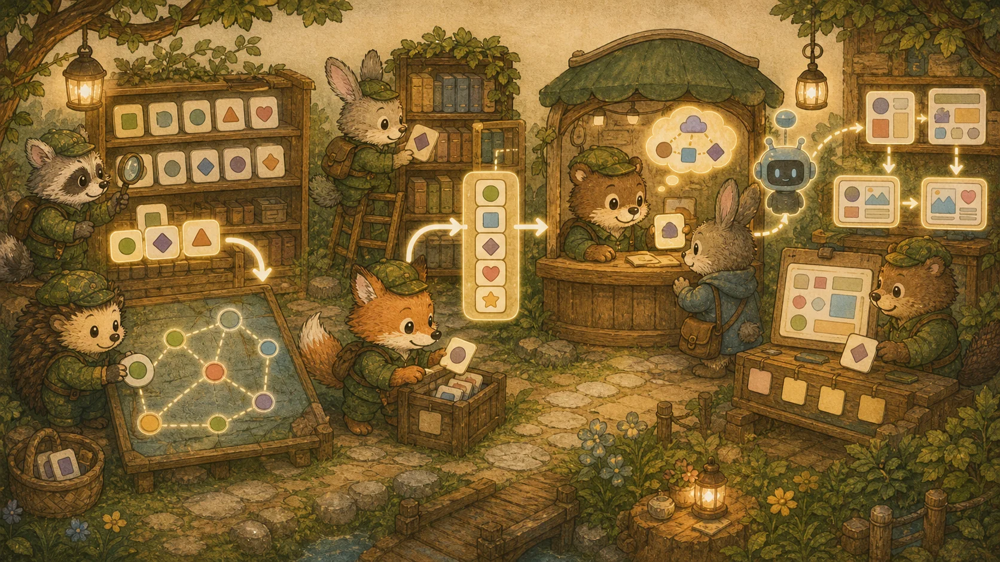
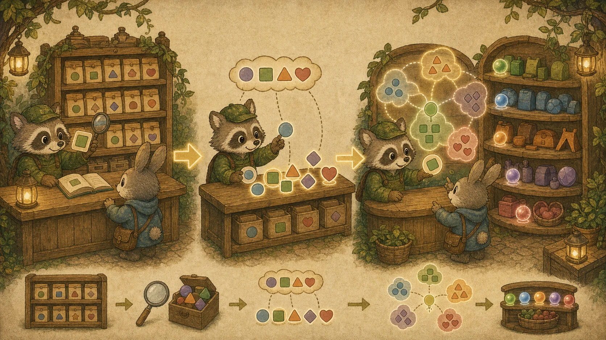
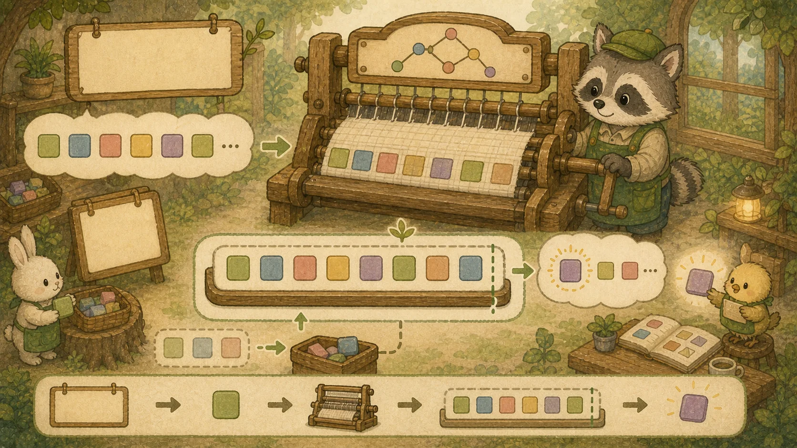
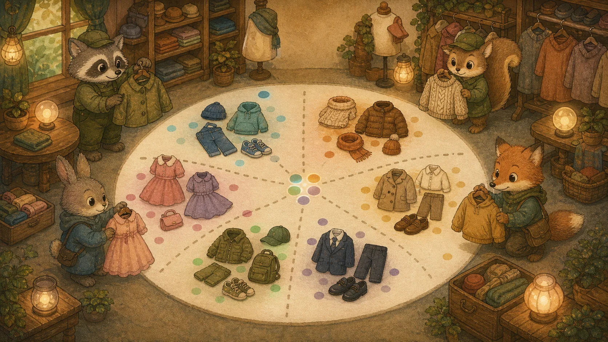
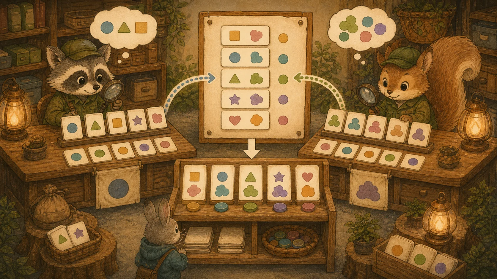
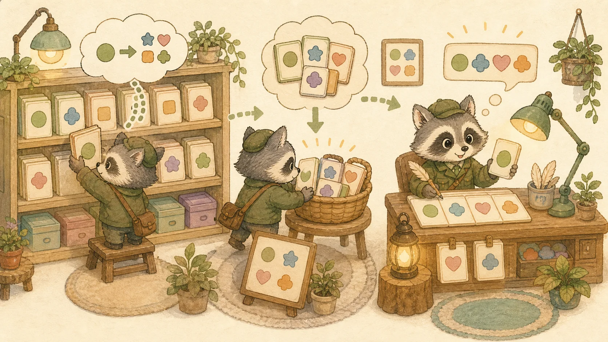
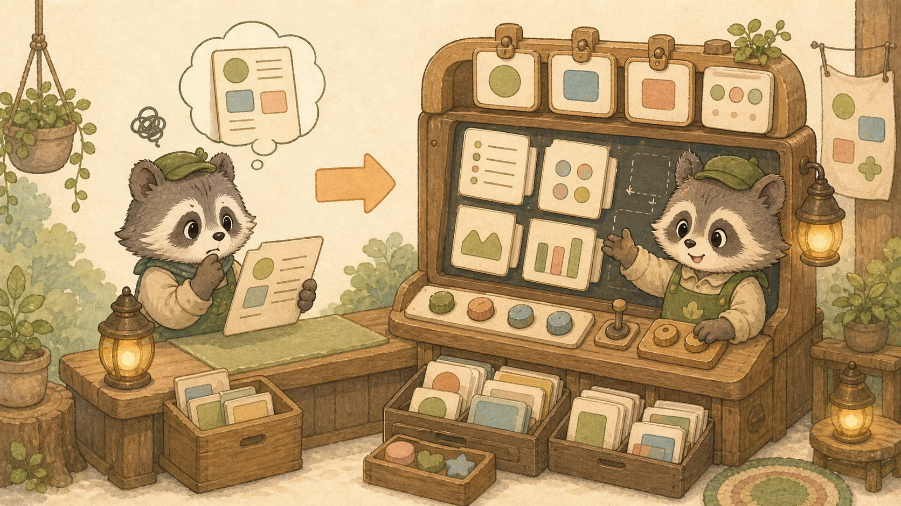

부록 D. AI-Native 통합 — pgvector · Spring AI · Generative UI
본 8챕터를 완주한 학습자를 위한 2026 AI 통합 패러다임 심화 부록입니다. 단순한 챗봇 연동을 넘어, 의미 기반 벡터 검색(pgvector), 에이전트 스스로 도구 사용을 결정하는 Agentic RAG, LLM이 React 컴포넌트를 실시간 생성하는 Generative UI까지 — 시니어 면접에서 가장 자주 질문되는 신 패러다임 3종을 의류 쇼핑몰 시나리오로 정복합니다.

0. 왜 지금 AI-Native 통합을 배워야 하는가
2024~2025년을 거치며 자바/리액트 채용 공고의 우대사항은 한 차원 진화했습니다. 단순한 CRUD나 REST API 설계 능력은 기본기로 격하되고, "LLM을 어떻게 자기 서비스에 깊게 녹였는가"가 시니어 차별화의 핵심으로 자리잡았습니다.
💡 비유로 이해하기: 옷가게 점원의 진화
1세대 점원 (CRUD): "후드 카테고리 보여주세요" → SELECT 쿼리로 카탈로그 반환.
2세대 점원 (검색 엔진): "오버핏 후드" → ElasticSearch 키워드 매칭.
3세대 점원 (벡터 검색): "비 오는 날 입을 만한 옷" → 의미를 이해해 후드/코트/우비를 함께 추천.
4세대 점원 (Agentic RAG): "내가 작년에 산 검은 자켓이랑 어울리는 거" → 과거 주문 검색 → 색감 분석 → 추천 → 답변.
5세대 점원 (Generative UI): "이번 주 잘 팔린 후드 비교해줘" → 텍스트가 아닌 실시간으로 그려진 BarChart 컴포넌트로 응답.

본 부록은 3세대 → 5세대까지의 핵심 도구를 다룹니다. 메인 8챕터의 어떤 부분이든 막히면 cross-link로 돌아가서 기초를 다시 다질 수 있습니다.
LLM 기초 — 토큰·프롬프트·모델 (RAG 이전 토대)
pgvector·RAG·Agentic RAG를 다루기 전에, 그 모든 것의 중심인 LLM이 무엇이고 어떻게 동작하는지의 기초가 필요합니다. 이 토대 없이 RAG부터 보면 "왜 검색이 필요한가"의 답을 놓칩니다.
① LLM이란 / 토큰 / 컨텍스트 윈도우
💡 비유로 이해하기: 초거대 자동완성기
LLM(거대 언어 모델)은 본질적으로 "다음에 올 단어를 확률로 예측하는 초거대 자동완성기"입니다. 방대한 텍스트로 학습해 문맥에 가장 그럴듯한 다음 토큰을 생성합니다.

- 토큰(Token): LLM이 처리하는 텍스트 조각. 영어는 대략 단어의 0.75개, 한국어는 글자 단위에 가까움. "안녕하세요"는 여러 토큰. API 요금과 처리량이 토큰 수로 계산됩니다.
- 컨텍스트 윈도우: 한 번에 LLM이 볼 수 있는 토큰의 최대량(예: 12.8만 토큰). 이를 넘으면 앞 내용을 "잊습니다" → RAG로 필요한 부분만 골라 넣는 이유.
- 파라미터: 모델의 학습된 가중치 수(수십억~수조). 클수록 똑똑하지만 느리고 비쌈.
② 프롬프트 / 시스템 프롬프트
// 프롬프트: LLM에게 주는 입력(지시). 잘 쓰는 게 '프롬프트 엔지니어링'
// 시스템 프롬프트: 대화 전체의 역할/규칙을 정하는 최상위 지시
chatClient.prompt()
.system("너는 Rehab Fashion의 친절한 패션 컨설턴트야. " +
"제공된 상품 정보에 없는 건 모른다고 솔직히 답해.") // 시스템 프롬프트
.user("비 오는 날 입을 옷 추천해줘") // 유저 프롬프트
.call();
// 시스템 프롬프트로 '거짓말(환각) 방지', '역할 고정'을 거는 것이 실무 기본③ API 키 / 모델 제공자
LLM은 보통 모델 제공자(OpenAI, Anthropic, Google 등)의 API로 사용합니다. API 키는 그 API를 호출할 권한을 증명하는 비밀 토큰 — 절대 코드/깃에 하드코딩하지 말고 환경 변수나 시크릿 매니저로 관리합니다(Ch 4 보안, Ch 8 환경 변수와 연결). 모델마다 성능·속도·가격이 다릅니다(예: 빠르고 싼 mini 모델 vs 똑똑하고 비싼 대형 모델).
# application.yml — API 키는 환경 변수로 주입 (하드코딩 금지!)
spring:
ai:
openai:
api-key: ${OPENAI_API_KEY} # 환경 변수에서 읽음
chat:
options:
model: gpt-4o-mini # 모델 선택 (속도/비용/성능 트레이드오프)④ RAG가 왜 필요한가 — LLM의 한계
😵 환각 (Hallucination)
모르는 것도 그럴듯하게 지어냄. 우리 쇼핑몰 상품 정보를 모르니 "있지도 않은 상품"을 추천할 수 있음.
📅 최신성 한계
학습 시점 이후 데이터를 모름. 오늘 입고된 신상, 실시간 재고를 알 리 없음.
해결책이 RAG: 답변 직전에 우리 DB에서 관련 정보를 검색해 프롬프트에 넣어줌으로써, 환각을 줄이고 최신/사내 정보를 반영합니다. 그래서 다음 섹션의 벡터 검색(pgvector)이 RAG의 핵심 부품이 됩니다.
⛓️ API 키 보안 → Ch 4 인증·보안 토대·Ch 8 환경 변수, RAG 흐름 → 아래 RAG 기본 섹션.
🧭 A. pgvector + 하이브리드 검색 (RRF)
메인 챕터 연계: Chapter 3 — B-Tree 인덱스 기초
A.1 임베딩(Embedding) — 의미를 좌표로 바꾸는 마법
벡터 검색의 출발점은 임베딩입니다. 텍스트("오버사이즈 후드", "오버핏 후디")를 고차원 숫자 배열로 변환하면, 의미가 비슷한 텍스트는 비슷한 좌표를 갖게 됩니다.
💡 비유로 이해하기: 옷의 패션 좌표
패션 매니저가 "오버핏 후드"를 (캐주얼 0.9, 스트릿 0.8, 격식 0.1, 따뜻함 0.7) 같은 4차원 좌표로 적어둔다고 상상해 보세요. "오버사이즈 후디"도 비슷한 좌표가 나옵니다. 두 좌표 간 거리(코사인 유사도)가 가까우면 의미가 비슷하다고 판단합니다. 실제 임베딩은 1,536차원 정도를 씁니다 (OpenAI text-embedding-3-small 기준).

-- 1. 확장 활성화 (한 번만)
CREATE EXTENSION IF NOT EXISTS vector;
-- 2. 상품 테이블에 임베딩 칼럼 추가 (1,536차원)
ALTER TABLE products
ADD COLUMN description_embedding vector(1536);
-- 3. 벡터 검색 인덱스 (HNSW: 빠른 근사 최근접 이웃)
CREATE INDEX ON products
USING hnsw (description_embedding vector_cosine_ops);
-- 4. 코사인 유사도로 검색 (가까운 5개)
SELECT id, name,
1 - (description_embedding <=> $query_embedding) AS similarity
FROM products
ORDER BY description_embedding <=> $query_embedding
LIMIT 5;핵심 연산자:
<=>— 코사인 거리 (값이 클수록 덜 유사: 0=동일·1=무관·2=반대)<->— 유클리드 거리 (L2)<#>— 내적 (negative inner product)
A.2 키워드 검색(BM25)의 한계와 보완
오랫동안 검색의 왕은 BM25(키워드 가중치 알고리즘)였습니다. 하지만 BM25는 단어가 정확히 일치해야 점수를 주므로 다음과 같은 사례에서 무력합니다.
❌ BM25만 쓸 때
사용자: "비 오는 날 입을 옷"
→ "비", "오는", "날", "입을", "옷" 모두 상품 설명에 들어있어야 매칭.
→ "방수 패딩"은 단어가 안 겹쳐서 탈락. 💀
✅ 벡터 검색만 쓸 때
사용자: "비 오는 날 입을 옷"
→ 의미 임베딩으로 "방수 패딩"과 거리 가까움 → 추천.
→ 하지만 "후드 J-9F" 같은 정확한 상품 코드는 의미가 없어 못 찾음. 💀
그래서 실무에선 벡터 검색 + BM25를 결합합니다. 결합 방식이 곧 RRF입니다.
A.3 RRF (Reciprocal Rank Fusion) — 두 검색의 점수를 융합
💡 비유로 이해하기: 두 명의 평론가 종합 점수
한 명의 평론가(BM25)는 정확한 단어 일치만 본다. 다른 평론가(Vector)는 의미를 본다. 각 평론가에게 톱 10 리스트를 받고, 각 후보의 "순위"를 역수로 더한다. 톱 1은 1/1, 톱 2는 1/2, 톱 3은 1/3… 두 리스트에서 모두 상위권인 후보는 자연스럽게 높은 합계를 갖습니다.

// RRF Score(doc) = sum over each ranker R of 1 / (k + rank_R(doc))
public Map<Long, Double> rrf(List<Long> bm25Ranks,
List<Long> vectorRanks,
int k) {
Map<Long, Double> score = new HashMap<>();
addRanks(score, bm25Ranks, k);
addRanks(score, vectorRanks, k);
return score; // 호출부에서 sorted by value desc → 톱 N
}
private void addRanks(Map<Long, Double> acc, List<Long> ranks, int k) {
for (int i = 0; i < ranks.size(); i++) {
long id = ranks.get(i);
acc.merge(id, 1.0 / (k + i + 1), Double::sum);
}
}왜 단순합이 아니고 역수합인가: 순위 1과 2의 차이는 크고, 순위 50과 51의 차이는 작게 만들기 위해서입니다. 검색의 본능과 맞습니다.
A.4 쇼핑몰 시나리오 — Spring에서 하이브리드 검색 엔드포인트
Rehab Fashion에서 "비 오는 날 입을 옷" 같은 자연어 검색을 받아 BM25 + 벡터 검색 결과를 RRF로 융합합니다.
@Service
@RequiredArgsConstructor
public class ProductSearchService {
private final ProductRepository productRepo;
private final EmbeddingClient embeddingClient; // Spring AI
public List<Product> hybridSearch(String query, int topN) {
// 1. 쿼리를 임베딩으로 변환
float[] queryVec = embeddingClient.embed(query);
// 2. BM25 (PostgreSQL Full-Text Search) Top N
List<Long> bm25Ids = productRepo.searchByBm25(query, topN * 2);
// 3. 벡터 검색 Top N
List<Long> vectorIds = productRepo.searchByVector(queryVec, topN * 2);
// 4. RRF 융합
Map<Long, Double> fused = rrf(bm25Ids, vectorIds, 60);
// 5. 점수 순 정렬 → Top N 상품 fetch
List<Long> topIds = fused.entrySet().stream()
.sorted(Map.Entry.<Long, Double>comparingByValue().reversed())
.limit(topN)
.map(Map.Entry::getKey)
.toList();
return productRepo.findAllByIdInOrder(topIds);
}
}⛓️ 더 깊은 인덱스 이론은 Chapter 3 → B-Tree 인덱스 섹션에서 복습.
🧭 하이브리드 검색 전체 흐름 시각화:
flowchart TD
Q["🗣️ 사용자 질의
'비 오는 날 입을 옷'"]
E["🧬 EmbeddingClient
(Spring AI)
1,536차원 벡터 생성"]
V[("🌐 pgvector
HNSW 인덱스")]
B[("🔤 BM25
Full-Text Index")]
R1["📋 벡터 Top N×2
(의미 유사)"]
R2["📋 BM25 Top N×2
(키워드 일치)"]
RRF["🔀 RRF 융합
score = Σ 1/(k+rank)"]
F["🏷️ 정렬 후 Top N
최종 결과"]
Q --> E
E -->|벡터 검색| V
Q -->|키워드 검색| B
V --> R1
B --> R2
R1 --> RRF
R2 --> RRF
RRF --> F
style Q fill:#74b9ff,color:#fff
style RRF fill:#fd79a8,color:#fff
style F fill:#00b894,color:#fff
🤖 B. Spring AI + Agentic RAG
메인 챕터 연계: Chapter 4 — REST API 설계 · Chapter 8 — MSA 아키텍처
B.1 RAG — 검색 증강 생성의 기본 흐름
LLM은 만능이 아닙니다. 학습 시점 이후 데이터를 모르고, 우리 회사 상품 카탈로그도 당연히 모릅니다. RAG(Retrieval-Augmented Generation)은 답변 직전에 관련 문서를 검색해서 프롬프트에 끼워넣는 패턴입니다.
💡 비유로 이해하기: 도서관에서 책 찾아 답하는 똑똑한 비서
사장님이 "지난주에 들어온 신상 후드 추천해줘"라고 묻습니다.
비서(LLM)는 신상 정보를 모릅니다. 하지만 똑똑한 비서는 먼저 창고 장부(벡터 DB)에서 "신상 후드" 임베딩 검색 → 톱 5개 상품 정보를 가져옴 → 그 정보를 자신의 메모에 붙여 답변합니다.

@RestController
@RequiredArgsConstructor
public class ProductChatController {
private final ChatClient chatClient;
private final ProductSearchService searchService;
@PostMapping("/api/chat/recommend")
public ChatResponse recommend(@RequestBody @Valid ChatRequest req) {
// 1. 사용자 질문으로 관련 상품 검색
List<Product> context = searchService.hybridSearch(req.message(), 5);
// 2. 프롬프트에 컨텍스트 삽입
String systemPrompt = """
너는 Rehab Fashion의 친절한 패션 컨설턴트야.
아래 상품 정보를 참고해서 답변해. 정보에 없는 건 솔직히 모른다고 해.
[상품 정보]
%s
""".formatted(formatProducts(context));
// 3. ChatClient에 위임
return chatClient.prompt()
.system(systemPrompt)
.user(req.message())
.call()
.chatResponse();
}
}B.2 Agentic RAG — 에이전트가 스스로 도구 사용을 결정
단순 RAG는 매번 검색하고 매번 답변합니다. 하지만 "안녕"이라는 인사에도 벡터 검색을 도는 건 낭비입니다. Agentic RAG는 LLM이 "이 질문은 검색이 필요한가?"를 스스로 판단하고, 필요하면 여러 번(multi-hop) 검색을 돌립니다.
🎯 Agentic RAG 결정 흐름
- 인사/잡담? → 검색 없이 즉답 (절약)
- 단순 상품 질문? → 벡터 검색 1회 → 답변
- 복합 질문 (예: "작년에 산 검은 자켓이랑 어울리는 거"):
- ① 사용자 주문 이력 검색 (도구 호출)
- ② 검은 자켓 색상/스타일 추출
- ③ 어울리는 상품 벡터 검색 (도구 호출)
- ④ 두 결과를 종합해 답변
@Service
public class ShoppingAgentService {
private final ChatClient chatClient;
private final ProductSearchService productSearch;
private final OrderHistoryService orderHistory;
public String ask(String userId, String message) {
return chatClient.prompt()
.user(message)
.tools(this) // 이 객체의 @Tool 메서드를 LLM에게 노출
.call()
.content();
}
@Tool(description = "사용자의 과거 주문 이력을 조회")
public List<Order> getOrderHistory(String userId) {
return orderHistory.findByUserId(userId);
}
@Tool(description = "자연어로 상품을 의미 기반 검색")
public List<Product> searchProducts(String query) {
return productSearch.hybridSearch(query, 5);
}
}LLM이 알아서 getOrderHistory()를 부르고, 그 결과를 보고 searchProducts()를 부릅니다. 코드 흐름이 미리 정해져 있지 않고 LLM이 결정한다는 게 핵심입니다.
🎯 Agentic RAG multi-hop 결정 시퀀스: 사용자의 복합 질문을 받아 LLM이 도구를 어떻게 선택·호출하는지 시각화한 다이어그램입니다.
sequenceDiagram
autonumber
participant U as 👤 사용자
participant L as 🤖 LLM
(Spring AI)
participant T1 as 🔧 getOrderHistory
(@Tool)
participant T2 as 🔧 searchProducts
(@Tool)
participant V as 🌐 pgvector
U->>L: "작년에 산 검은 자켓이랑
어울리는 거 추천해줘"
Note over L: 분석: 과거 주문 + 추천 둘 다 필요
L->>T1: 사용자 주문 이력 호출
T1-->>L: [블랙 레더 자켓, ...]
Note over L: 검은 자켓 → 색감/스타일 추출
"블랙 캐주얼 매치"
L->>T2: searchProducts("블랙 캐주얼 매치")
T2->>V: 벡터 + BM25 하이브리드
V-->>T2: 톱 5 상품
T2-->>L: [화이트 후드, 그레이 데님, ...]
Note over L: 두 결과 종합 + 자연어 생성
L-->>U: "작년 자켓과 어울리는
3가지 상품을 추천드려요..."
B.3 Advisor 패턴 — 안전 가드와 라우팅의 표준 인터셉터
Spring AI의 Advisor는 Spring의 HandlerInterceptor와 비슷합니다. 모든 ChatClient 호출 전/후에 끼어들어 프롬프트 검열, 검색 결과 주입, 로그 기록을 수행합니다.
@Bean
public ChatClient chatClient(ChatClient.Builder builder,
VectorStore vectorStore) {
return builder
.defaultAdvisors(
new SafeGuardAdvisor(BLOCKED_WORDS), // 욕설/PII 차단
new QuestionAnswerAdvisor(vectorStore), // RAG 자동 주입
new SimpleLoggerAdvisor() // 호출 로그
)
.build();
}⛓️ 컨트롤러 설계 패턴은 Chapter 4 — REST API 설계에서 복습. MSA로 분리하는 경우 Chapter 8 — Spring Modulith에서 모듈 경계 설정.
🎨 C. Generative UI + Vercel AI SDK
메인 챕터 연계: Chapter 5 — Next.js Server Component · Chapter 6 — Zustand 상태 관리 · Chapter 7 — 풀스택 통신
C.1 텍스트 응답의 한계 → LLM이 React 컴포넌트를 직접 반환
전통적인 챗봇은 텍스트로만 답합니다. 사용자가 "이번 주 판매량 비교"를 물으면 "후드 30개, 자켓 22개, 티셔츠 18개…"라는 줄글이 나옵니다. 읽기 힘듭니다.
💡 비유로 이해하기: 종이 메뉴 vs 인터랙티브 키오스크
옛날 식당은 종이 메뉴(텍스트)만 줬습니다. 현대 키오스크는 실제 클릭 가능한 카테고리 카드, 가격 차트, 옵션 선택기를 즉석에서 그려서 보여줍니다. Generative UI는 챗봇에게 키오스크를 그릴 권한을 준 것입니다.

C.2 Vercel AI SDK streamUI — 컴포넌트 스트리밍
Next.js App Router에 잘 맞는 streamUI는 LLM의 응답을 받는 동시에 React 컴포넌트를 부분 렌더링합니다.
streamUI)는 현재 experimental이며, 공식 문서는 프로덕션엔 "AI SDK UI" 사용을 권장합니다. 또 API 형태가 자주 바뀌므로(아래는 현재 시점 기준) 실제 적용 전 ai-sdk.dev 최신 문서를 반드시 확인하세요. 아래 예제는 "개념 이해용"으로 보면 됩니다.
import { streamUI } from "@ai-sdk/rsc"; // 현재 import 경로 (구 "ai/rsc" 아님)
import { openai } from "@ai-sdk/openai";
import { z } from "zod";
import { BarChart } from "@/components/charts/BarChart";
import { ProductCard } from "@/components/shop/ProductCard";
export async function POST(req: Request) {
const { message } = await req.json();
const result = await streamUI({
model: openai("gpt-4o-mini"),
prompt: message,
text: ({ content }) => <p>{content}</p>, // 평문 응답
tools: {
showSalesChart: {
description: "주별/카테고리별 판매량 비교 차트",
inputSchema: z.object({ // 현재 필드명은 inputSchema (구 parameters 아님)
labels: z.array(z.string()),
values: z.array(z.number())
}),
generate: async ({ labels, values }) => (
<BarChart labels={labels} values={values} />
)
},
showProduct: {
description: "특정 상품 카드를 렌더링",
inputSchema: z.object({ productId: z.number() }),
generate: async ({ productId }) => {
const p = await fetchProduct(productId);
return <ProductCard product={p} />;
}
}
}
});
return result.value; // 초기 렌더 결과는 result.value, 스트림은 result.stream
}여기서 일어나는 일: LLM이 "차트 보여드릴게요"라고 판단하면 showSalesChart 도구를 호출, 입력 스키마(inputSchema)에 맞춰 라벨/값 배열을 채워 보냅니다. 서버는 그걸 generate로 <BarChart />로 변환해 스트리밍합니다. 사용자는 LLM 응답을 그래프로 봅니다.
C.3 쇼핑몰 시나리오 — "이번 주 인기 후드 비교해줘"
📜 전통 챗봇
"이번 주 후드 판매량은:
· 오버사이즈 후드 30건
· 크롭 후드 22건
· 베이직 후드 18건
총 70건이 판매되었습니다."
🎨 Generative UI
실제 막대 그래프가 응답에 그려져서 나옵니다.
그 아래 각 상품 카드가 추가로 렌더링되어 사용자가 바로 클릭해서 장바구니에 담을 수 있습니다.
대화창이 곧 쇼핑몰 UI가 됩니다.
⛓️ Server/Client Component 경계는 Chapter 5에서, 장바구니에 담는 상태 관리는 Chapter 6 — Zustand에서 복습.
🔗 D. Cross-link 매트릭스
D.1 막혔을 때 돌아갈 메인 챕터 지도
본 부록의 각 개념이 어느 메인 챕터에 뿌리를 두고 있는지 한 눈에 보는 표입니다.
| 부록 D 개념 | 막혔을 때 복습할 메인 챕터 | 왜 필요한가 |
|---|---|---|
| pgvector 벡터 인덱스 | Ch 3 — B-Tree 인덱스 | HNSW는 B-Tree와 다른 인덱스 구조. 기본 인덱스 이해가 선행되어야 함. |
| RRF 융합 검색 | Ch 3 — QueryDSL | 동적 쿼리 처리 패턴을 알아야 두 결과를 자바 코드로 합치는 게 자연스러움. |
| Spring AI ChatClient | Ch 4 — REST API + 예외 처리 | 컨트롤러 설계, 검증, 글로벌 예외 처리가 안 잡혀있으면 AI 엔드포인트도 같은 함정에 빠짐. |
| Advisor 패턴 | Ch 2 — AOP / Bean 라이프사이클 · 부록 B — AOP 동작 원리 | Advisor는 본질적으로 인터셉터/AOP. Spring의 횡단 관심사 처리 매커니즘 이해 필수. |
| Agentic RAG (Multi-hop) | Ch 8 — Spring Modulith | 여러 모듈(주문 이력, 상품 검색, 추천)을 LLM이 조합. 모듈 간 경계가 잘 분리돼야 도구로 노출 가능. |
| streamUI (Generative UI) | Ch 5 — Server Component · Ch 6 — Zustand | 서버에서 컴포넌트를 만들어 보내는 패러다임. Server Component 멘탈 모델이 필수. |
| AI 응답 스트리밍 | Ch 7 — WebSocket / Axios Interceptor | SSE/WebSocket 기반 실시간 통신 이해가 streamUI 응답 처리의 기초. |
🤝 [실무 보강 박스] AI 코딩 워크플로우 — Cursor · Copilot · Claude를 동료처럼
이제 면접은 "AI 도구를 쓸 줄 아는가"가 아니라 "어떻게, 어디까지 맡기고, 무엇은 직접 책임지는가"를 묻습니다. (State of JS 기준 Cursor 사용률이 11% → 26%로 급증.) AI를 주니어 페어 프로그래머로 보는 관점이 핵심입니다 — 초안은 빠르게 뽑되, 검증과 판단은 내 몫으로 남깁니다.
✅ 잘 맡기는 일
① 테스트 생성(엣지·경계값을 빠르게) ② 낯선 코드 설명·리팩터 제안 ③ 보일러플레이트(DTO·매퍼·CRUD 골격) ④ 탐색·러버덕(API 용법·에러 원인 가설).
⚠️ 직접 책임지는 일
① 환각(그럴듯하지만 틀린 코드·API) → 반드시 테스트로 검증 ② 설계·트레이드오프 판단 ③ 보안·라이선스(민감정보 붙여넣기 금지, 생성 코드 취약점 점검) ④ 최종 책임 — 이해 못 한 코드는 머지 금지.
💡 면접 한 줄: "AI 코딩 도구를 어떻게 활용하나요?" → "반복·초안은 AI에, 설계 판단·검증·책임은 나에게 둡니다. 생성된 코드는 반드시 읽고 테스트(부록 A)로 검증하며, 민감정보는 넣지 않습니다. AI로 속도는 올리되 코드 이해도는 타협하지 않습니다."
🪄 참고: 이 학습 대시보드 자체도 AI 협업으로 만든 산출물입니다 — "AI를 또 하나의 도구로 다루는 자세"의 살아있는 예시.
D.2 마치며 — AI를 "또 하나의 도구"로 다루는 자세
AI-Native 통합은 마법이 아니라 벡터 인덱스 + 컨트롤러 + AOP + 스트리밍 + 컴포넌트 렌더링의 조합일 뿐입니다. 메인 8챕터의 기본기가 단단하다면 본 부록은 빠르게 흡수됩니다. 반대로 기본기가 흔들리면 AI 콘텐츠도 표면적으로만 쌓입니다.
🎯 면접 대비 한 줄 정리
- 벡터 검색만으로 충분한가? → 정확한 코드 매칭은 BM25가 강함. RRF로 융합.
- RAG와 Fine-tuning의 차이? → RAG는 추론 시 컨텍스트 주입, FT는 모델 자체 수정. 자주 바뀌는 데이터는 RAG.
- Agentic RAG vs 단순 RAG? → 검색 필요 여부를 LLM이 판단 + multi-hop 가능.
- Generative UI가 왜 중요한가? → 텍스트 응답 한계 돌파, 챗봇이 곧 인터랙티브 UI.
- Spring AI의 Advisor는 무엇과 유사? → HandlerInterceptor, AOP Around.
🛠️ 직접 만들어보기 — "이걸로 만들 수 있나?" 체크포인트
읽기만으로는 복귀가 안 됩니다. 간단한 RAG 엔드포인트를 만들고, 그다음 한계를 직접 문서화하세요 — 한계를 아는 것이 AI 통합의 실력입니다.
- 상품 설명을 임베딩해 pgvector(또는 인메모리)에 저장 → 자연어 질의로 벡터 검색 → 톱 N을 프롬프트에 주입 → LLM 응답하는 RAG 엔드포인트 1개
- API 키는 환경 변수로(하드코딩 금지), Spring AI
ChatClient또는 Vercel AI SDK 사용 - 실패 케이스를 직접 만들어 보고 한계를 문서화: 검색 미스로 엉뚱한 답, 환각, 토큰/비용, 컨텍스트 윈도우 초과
- (선택) BM25 + 벡터 하이브리드(RRF)로 검색 품질이 어떻게 달라지는지 비교